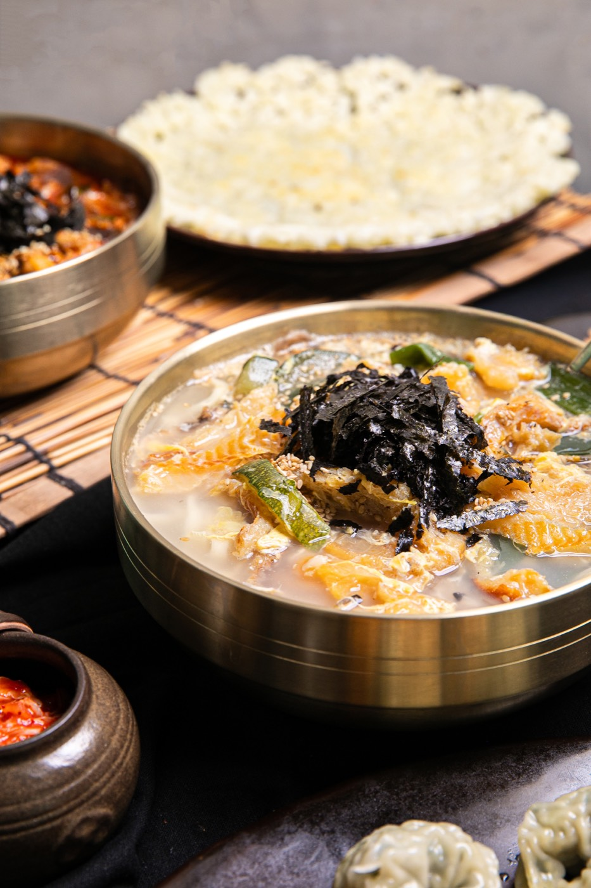

海東龍宮寺からソンジョン海水浴場までは海岸の案内板で約2.1km、車で10分前後です。参拝の後はソンジョンで温かいカルグクスをどうぞ。
土・日は朝8時30分から営業しているので、朝の参拝の後にもぴったりです。
スープについて
カルグクスとチャングッパのスープには、しっかり乾燥させた海産物をたっぷり挽いて入れています。だから味が深く濃厚で、スープだけ飲んでも「補薬を一杯飲んだように元気が出る」と言われます。 麺は店で手作りした生麺。太くてもちもちの麺が濃いスープをよく絡めます。
メニューと価格
営業情報
- 月・火・木・金 10:30～24:00（休憩 15:00～17:00）
- 土・日 08:30～24:00（休憩なし）
- 毎週水曜定休、ラストオーダー23:30
- 東海線ソンジョン（松亭）駅2番出口から833m、ソンジョンビーチ端のロータリー
- 駐車場・テイクアウト・団体OK
関連記事
店舗情報
| 店名 | 江陵現代チャンカルグクス 釜山店（강릉현대장칼국수 부산점） |
|---|---|
| 住所 | 釜山広域市 海雲台区 松亭中央路46 1階（부산광역시 해운대구 송정중앙로 46 1층） |
| 営業時間 | 月・火・木・金 10:30～24:00（休憩15:00～17:00）、土・日 08:30～24:00 |
| 定休日 | 水曜日 |
| 電話 | +82-507-1376-6682 |
よくある質問
- 海東龍宮寺から近いですか？
- ソンジョン海水浴場まで約2.1km、車で10分前後です。
- 場所はどこですか？
- 釜山広域市 海雲台区 松亭中央路46 1階、ソンジョンビーチ端のロータリーです。
- 営業時間は？
- 月・火・木・金 10:30～24:00（休憩15:00～17:00）、土・日 08:30～24:00、水曜定休です。